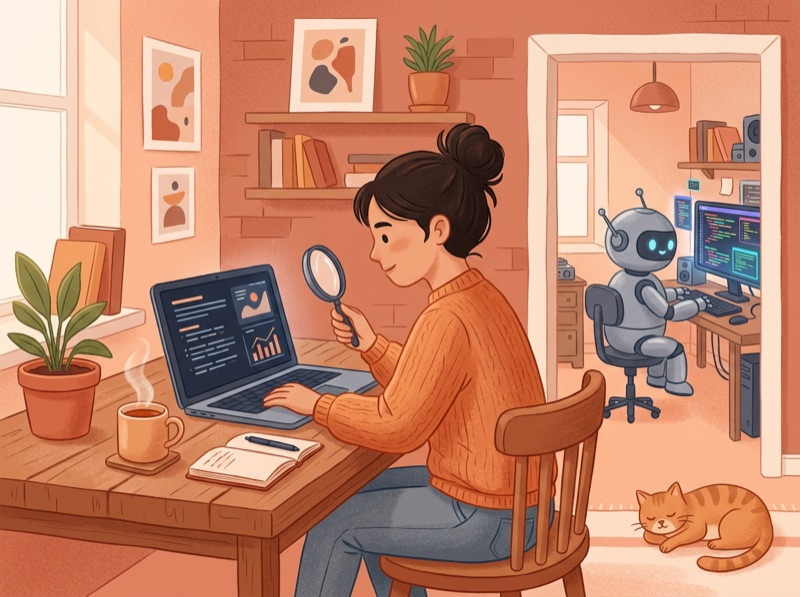

テーマ
12限で後輩に話した（聞かれた）ことを、自分の最終審査に当てはめて一言メモする。そのうえで、Devin（Cognition）を公式の説明から知る。Devin Cloud・Devin CLI・Devin Desktop、AskとAgent、Skillsを、第8回の指示の型に当てはめ、Claude Code／Codex CLI／Antigravity CLIと、公式で確認できた範囲で比べる。学習利用などデータの扱いと料金を確かめ、学生は課金しない。自分の進級制作に使うかを判断する
キーワード
Devin Cloud・CLI・Desktop / Ask → Agent / 仮想マシン / Skills / 学習利用（Freeと有料） / 課金しない / 最終審査までにやること
必要な準備
12限で思ったこと（メモ）。進級制作のリポジトリを開けること。Devinの登録・インストールは不要です。
この回のゴール
- 12限で後輩に伝えたこと・聞かれたことを、自分の最終審査に当てはめて一言メモできる
- Devinの製品（Cloud・CLI・Desktop）と、Ask → Agentの流れを、公式の説明から言える
- Devinを、いつも使う道具と、公式で確認できた範囲で比べられる（書かれていないことは、未確認と言える）
- 学習利用（Freeと有料で違う）と料金を知り、渡してよいもの・いけないものを分けられる
- Devinを自分の進級制作に使うか・使わないかを、理由つきで決め、最終審査までにやることを書ける
今日の優先順位: Devinを「使えるようになる」ことは目標ではありません。公式の説明を読み、比べて、自分で判断することが目標です。
授業の流れ
2コマ連続（90分 + 90分 = 計180分）。途中休憩あり。
1限 前半
約40分
12限を思い返し、Devinとは何かを知る
今日の流れ：つなぐ → 知る → 比べる → 判断する
① 12限の一言メモ（約5分）
- 12限を思い返す後輩に話したこと・聞かれたことを、メモする（絵の例）
- 12限で後輩に話したこと、聞かれたことを、ノートに一言ずつ書く（話の内容は、人によって違ってよい）
- それを、自分の卒業進級制作の最終審査に当てはめると、どうなるか。1行で書く（12限に出なかった人は、「後輩に伝えるとしたら」で書く）
- このメモは、2限後半で、最終審査までにやることを決めるときに使う
② Devinとは（約15分）
- 公式の説明: 「Devin is an autonomous AI software engineer that can write, run and test code.」（Devin Docs「Introducing Devin」）。自律型のAIソフトウェアエンジニアで、コードを書き、動かし、テストする
- 使い方の入口は、Webアプリ（app.devin.ai）、API、Slack・Microsoft Teamsとの連携。セッションの画面には、Shell・IDE・Browserの道具がある
- 製品は、公式のFAQが4つ挙げる（下の図）。Desktopは、旧Windsurf。FAQには「On June 2, 2026, Windsurf is becoming Devin Desktop.」とある（予定の書き方で、実際の切り替えの確認は未了）
Devinの4つの製品
③ Ask → Agent の流れ（約12分）
- Devin Cloudには、2つのモードがある（Devin Docs「Your First Session」）。Askは、コードの質問に答え、作業の計画を立てる（コードは変えない）。Agentは完全な自律モードで、コードの変更、コマンドの実行、Webの閲覧、PRの作成まで行う
- 公式の勧め: 作業範囲が固まっていなければ、まずAskで計画し、そのあとAgentで実行する。成功の基準がはっきりした作業から始める
- 2026-11-13に、Ask・Agentの切り替えは、ヘッダーから入力欄の中に移った（リリースノート）。画面は変わりやすい
Devin Cloudの Ask → Agent
④ いつもの道具との違い（予告）（約8分）
- これまでに、Claude Code／Codex CLI／Antigravity CLIと、第8回の4つの型（先に質問させる／計画だけ立てさせる／道具で解決できるか聞く／確かめ方を渡す）を使ってきた
- 1限後半は、「動く場所」「渡し方」「承認」「データ」の4つの見方で、Devinと並べる。どれが優れているかではなく、何が書かれていて、何が書かれていないかを見る
1限 後半
約50分
動く場所・渡し方・比べ方
① 動く場所：クラウドか、手元か（約15分）

任せて、確かめる離れた場所で作業が進んでも、結果を確かめるのは人（絵の例）
動く場所と、送られるもの
- Devin Cloudは、仮想マシンで動く（Devin CLIのページ: the cloud Devin "runs in a virtual machine"）。リポジトリは、Devinの側につなぐ必要がある（「Your First Session」）
- Devin CLIは、「a local command-line coding agent with deep Devin Cloud integration」。手元のファイルと環境で動き、長い作業はクラウドに渡す（
/handoff）こともできる - Devin Desktopは、AI IDEで、Devin Localというエージェントが、手元のマシンで動く
- 注意: 「Devinはクラウド、他はローカル」と分けてはいけません。Claude CodeにもCodexにも、クラウドで動く形があります（下の比較表）。「手元で動く＝外へ送られない」とも言えません
② 第8回の4つの型を、Devinに当てはめる（約15分）
- ① 先に質問させる／② 計画だけ立てさせる → Devin CloudのAskが近い（質問と計画で、コードは変えない）。ただし同じものではなく、この授業での当てはめです
- ③ 道具で解決できるか聞く → Devinでは、MCPツールの権限をAllow／Needs approval／Blockから選べる（2026-11-12のリリースノート）
- ④ 確かめ方を渡す → 作業の成功の基準を、先に渡す。公式も「clear success criteria」の作業から勧めている
- Skills: PlaybooksはSkillsに移行中（2026-10-23）。アカウントごとに順に移り、移ると各Playbookが同じ内容のskillになる（リリースノート）。Devin CLIは、アカウントのKnowledge・Playbooks・Secretsにまだ対応していない（公式）
- Devin Bots（2026-11-19）: 「always-on Devins with their own identity, memory and permissions」。常時稼働で、独自のID・記憶・権限を持つ。第10回のMuseの「常時稼働」と、同じ種類の話で、承認と権限の設計が大切になる
③ 4つのエージェントの比較（約20分）
確認日 2026-11-25。公式のページに書かれていることだけを並べています。「書かれていない」は、できないという意味ではありません。引用は短くしてあります。
| 見方 | Devin | Claude Code | Codex | Antigravity CLI（agy） |
|---|---|---|---|---|
| 動く場所 | Cloudは仮想マシン。CLI・Desktopは手元 | 端末・IDE・デスクトップ・ブラウザ。クラウドのセッション（Claude Code on the web）もある | Codex CLI（手元のリポジトリ）と、Codex Cloud（クラウドの作業場所） | ターミナルのクライアント。読んだCLIのページには、クラウドで動く形は書かれていない（未確認） |
| 承認 | Cloudは Ask／Agent。MCPツールは Allow／Needs approval／Block。CLIの承認は、読んだページに書かれていない | 既定は "Prompts before most edits, shell commands, and network requests."。ほかにplan・auto等のモード | CLIで /permissions を使い、ファイル編集やコマンドを、確認なしで許す場面を選ぶ | defaultは、ファイルの変更の前にdiffを確認し、端末のコマンドの前に聞く。ほかにauto・accept-edits・plan |
| Git・PR | Agentは、PRの作成まで行う（公式） | ブランチを作り、PRを開く（公式）。クラウドのセッションは、GitHubが前提 | クラウドで、変更を確認して、コミットまたはPRを開ける（公式） | 読んだページには、PRの作り方は書かれていない（未確認） |
| 学習利用 | 利用しうる。有料プランは断れる（規約3.3.1）。Freeは断れない | 商用の規約では、学習に使わない（条件つき）。個人のプランは、設定しだい（公式のdata usage） | 今回読んだページには書かれていない（未確認） | 今回読んだページには書かれていない（未確認） |
表の読み方: 「未確認」の欄は、自分で公式を読んで埋める練習の材料です。授業の最後までに、1か所、自分で公式ページを開いて確かめてみましょう（リンクは、下の参考リンク）。
休憩
10分
2限 前半
約50分
料金・データの扱い・渡してよいもの、そして教員の実演
① プランと料金（約10分）
- 公式の料金ページ（devin.ai/pricing）: Free $0／Pro $20／Max $200／Teams $80（月額）、Enterpriseは問い合わせ
- Freeの説明は、「a light quota to code with agents, limited model availability, unlimited inline edits, and unlimited Tab completions」。Devin Cloud（クラウドのエージェント）は、Pro以上に書かれている（表の記号が取れていないため、Freeでクラウドのエージェントが使えるかは、教員が画面で確認します（未確認））
- 使用量の数字（上限）は、料金ページに書かれていません。超えた分は「API pricing」で購入する、とある
- 学生は、課金しません。登録もしません（この回は、公式の説明と、教員の実演を見ます）
注: ページ上の価格・プランは、変わることがあります（確認日 2026-11-25）。
② データの扱い（約15分）
データの扱い：プランで違う（規約）
- 規約（Platform Terms of Service 3.3.1、2026-11-16更新）: 「Cognition may use Customer Data for model training purposes ... If you subscribe to a paid Service Tier, you may opt out of this use」。有料プランなら、断れる。Teamsは「only an administrator」が断れる
- つまり、Freeでは、入力したコードや文が、モデルの学習に使われうると読める（規約の文面。実際の運用は確認していない）
- プライバシーポリシー（2026-10-26更新）も「depending on the terms that apply ... train」と、規約しだいと書く。保存の期間の日数は、書かれていません。18歳以上のみ利用でき（本校の学生は全員当てはまる）、日本についての記載は、見当たりませんでした
- Enterprise向けには「No training on enterprise customer data」とある（devin.ai/security）。これはEnterpriseの記述で、Free・Proには当てはまると書かれていない
③ 渡してよいもの・いけないもの（約10分）
自分でDevinを使うことになったら：渡してよいもの
- ペアで、自分の進級制作に、渡してよいものと、いけないものがあるかを、1つずつ挙げる（個人名・パスワードは言わない）
- Devin Cloudは、リポジトリをDevin側につなぐ前提です。つなぐものが非公開のチームのコードなら、チームの了解と、データの扱いの確認が、先に必要です
④ 教員の実演・公式画面を見る（約15分）
- 教員が、授業前に確認できた範囲で、Devinの画面を見せる（見せられない場合は、公式のページの図や文を、一緒に読みます）。学生は見るだけで、登録・入力はしません
- 見るポイント: Askで計画 → Agentで実行の流れ／セッションの画面（Shell・IDE・Browser）／どこで承認や確認が出るか／できあがったPR（作られている場合）
- 見ながら、「自分なら、どこで止めて、何を確かめるか」をメモする（第10回で決めた「止める条件」と同じ考え方）
2限 後半
約30分
自分で判断して、最終審査に向けて進める
① 使う？ 使わない？ 理由を書く（約10分）
- Devinを、自分の進級制作に使うか・使わないかを決め、理由を1〜2行で書く。見る観点:
- 渡せるか: 進級制作のコードを、チームの了解なしに渡さない
- データ: Freeは学習利用を断れない。有料なら断れる（課金は学生はしない）
- 確かめ方: 自律で任せるなら、成功の基準を先に渡せるか
- いつもの道具で足りるか: すでに使っている道具で、足りているか
- 「使わない」も、立派な判断です。理由を言えることが大切
② 最終審査までにやること3つ → 制作（約20分）
最終審査までにやること：3つの例
- 1限前半の12限のメモを見ながら、最終審査までにやることを3つ書く
- 1つ目から、自分の進級制作を進める。AIエージェントを使うときは、小さく頼み、出てきたものは人が確かめる（第10回までと同じ）
- 進んだ分は、コミット・プッシュする。やり方が分からない人や、チームでGitの共有に困っている人は、先生へ
まとめ
約10分
今日の判断を残し、次回を知る
今日の一言メモ（3つ）
- 先生のひとこと（約3分）: 今日の「比べ方」を、これからの回にどうつなげるか
- 一言メモ（約4分）: Devinを使うか・使わないかと理由、最終審査までにやること、気になったこと
- 次回（第12回、約1分）：無料枠と課金を可視化しよう——Cloudflareのダッシュボードで使用量と無料枠の上限を確認し、AWSのアラートとの違いを理解する（授業計画一覧）。授業計画の第12回以降は、授業後に先生が見直します
- メモが残っているか、最後に確かめて退出（約2分）
課題・次回までにやること
必須
今日の判断（Devinを使うか・使わないかと理由）と、最終審査までにやること3つを、メモに残す
次の回の最初に開きます。個人情報とパスワードは書かない。
推奨
比較表の「未確認」の1か所を、自分で公式ページを開いて確かめる
わかったことと、確認した日付を、メモに書く。登録や課金は、しません。
参考リンク
すべて公式のページです（確認日 2026-11-25）。ページの内容と画面は、変わることがあります。
- Introducing Devin（Devin Docs） — 自律型のAIソフトウェアエンジニア、はじめ方
- Your First Session（Devin Docs） — Ask と Agent のモード
- Quickstart（Devin CLI、Devin Docs） — ローカルのCLI、できないこと
- Welcome to Devin Desktop（Devin Docs）・Devin Desktop FAQ — 旧Windsurf
- 2026（Devin Docs、リリースノート） — Devin Bots、Skills、MCPの権限
- Plans and Pricing（Devin） — Free・Pro・Max・Teams
- Platform Terms of Service（Cognition） — 3.3.1 データの利用とオプトアウト
- Privacy Policy（Cognition） — 18歳以上、学習利用
- Claude Code overview（Claude Code Docs）・Claude Code on the web・Permissions・Data usage
- Codex CLI・Codex Cloud（OpenAI）
- Getting started（Google Antigravity）・Modes（Antigravity CLI）
- 第10回 Museを使いこなす（本サイト） — 常時稼働型のエージェントと、承認・権限
- 第8回 AIエージェントに効率よく働いてもらう、指示の4つの型（本サイト）